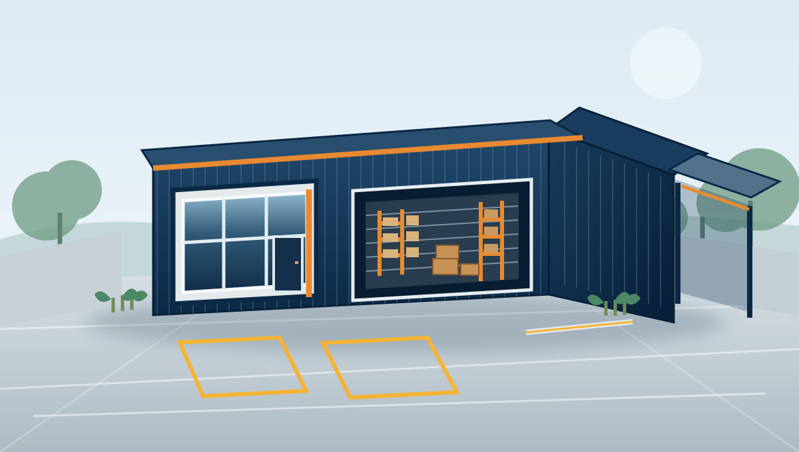
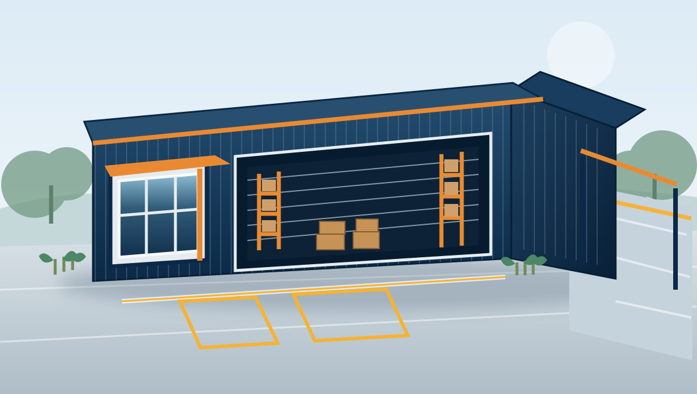

Uma infraestrutura prevista para organizar o armazenamento de materiais, a distribuição, o atendimento e o apoio diário às operações e projectos da HMATIAS.
378,53 m²ÁREA DO TERRENO
15,141 × 25 mDIMENSÕES DO LOTE
2ALTERNATIVAS DE CONFIGURAÇÃO
CONCEITO DO PROJECTO
Duas alternativas em avaliação
As propostas respondem ao mesmo terreno, mas privilegiam necessidades operacionais diferentes. A configuração final depende da confirmação do local e da revisão técnica.

ALTERNATIVA A
Alternativa A — Compacta e eficiente
Armazém fechado de 96 m², complementado por cobertura lateral e áreas distintas de atendimento e apoio técnico.
A
Armazém principal96,00 m²
Cobertura lateral26,40 m²
Escritório / atendimento14,00 m²
Apoio técnico7,50 m²
Total coberto indicativo143,90 m²
O estudo-base indica ainda uma faixa de circulação de veículos com 3,70 m livres e um portão com abertura de 4,20 m.

ALTERNATIVA B
Alternativa B — Maior capacidade de armazenagem
Armazém fechado de 140 m², com corredor lateral de acesso dedicado e zona frontal de manobra.
B
Armazém fechado140,00 m²
Escritório / atendimento12,00 m²
Corredor lateral livre4,14 m
Pátio frontal de manobraAprox. 9,00 m de profundidade
Afastamento traseiro2,00 m indicativo
O estudo de origem não consolida a área coberta total desta opção; não é calculado nem publicado qualquer total por estimativa.
FINALIDADE OPERACIONAL
O que o estaleiro deverá assegurar
O projecto está pensado como uma base operacional, não como uma obra concluída para o portfólio.
01
Armazenamento de materiais
Áreas de stock protegido e organização para recepção e expedição de mercadorias.
02
Distribuição e operações
Circulação e zonas de movimentação pensadas para o fluxo diário de materiais.
03
Apoio administrativo
Escritório de atendimento e espaço de apoio às vendas, registos e coordenação operacional.
Fase actual do projecto. O projecto encontra-se na fase de estudo preliminar de implantação. As imagens são perspectivas arquitectónicas conceptuais para apresentação; não são fotografias de uma instalação concluída nem desenhos aprovados para construção.
Antes da construção, a opção escolhida exige confirmação do levantamento e limites do terreno, afastamentos legais, projecto de arquitectura, cálculos estruturais, dimensionamento do piso e drenagem, geometria dos acessos, segurança contra incêndios e instalações técnicas.
Informação sobre o projecto e parcerias
Para questões sobre o projecto, oportunidades de fornecimento ou reunião técnica, contacte a HMATIAS. Nesta fase não é anunciada uma data de início da construção nem uma configuração final.